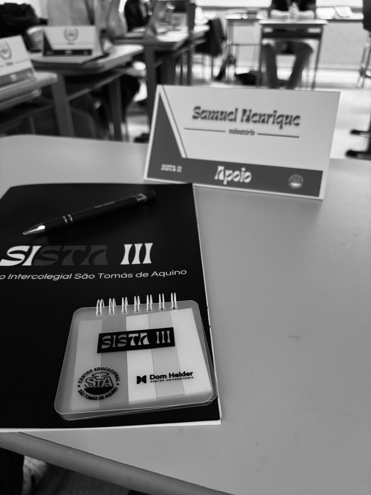

HOBBIES/GOSTOS
- Matemática
- Física
- Esportes
- Linguagens
- Leitura
- Cominucação
- Engenharia
- IoT
- Programação
- Música
- poemas
- cozinhar
- tirar fotos
Aprendi a tocar violão e teclado sozinho em casa, gosto de escrever poemas e de compôr músicas.


 - cópia.jpeg)

ESPORTES
Eu faço natação em um clube da minha cidade, faço também volêi na escola. Sou muito bom em variados esportes, amo basquete, jogo bem mas não faço aula. Assisto Fórmula 1, futebol e outros esportes variados. Meu time(de futebol) do coração é o Clube Atlético Mineiro(mais conhecido como Galo Maior de Minas), e o da Europa é o Barcelona.
CONQUISTAS
Na minha primeira competição de natação, ganhei o n3º lugar no torneio de natação Novalimense. Já ganhei certificado de leitor assíduo em 2024 na minha escola, já ganhei o 2º lugar na etapa Microrregional do JEMG 2026, tenho certificado de participação na SISTA III(Simulação Intercolegial do São Tomás de Aquino) como voluntário e escrevente do TPI(Tribunal Penal Internacional). Também já recebi um certificado de desempenho escolar trimestral, em que fiquei em 3º lugar na sala. Já ganhei um certificado de participação de uma Imersão de Dados com Python II da Alura. Gosto de participar de várias atividades, como do GEN(Gincana Estudantil Novalimense)que fui como um dos 10 líderes para representar a escola, ficamos na 4º colocação.




OBJETIVOS
- Passar em uma das provas para o ensino médio.
- Aprender novas linguagens de programação e desenvolver meus próprios projetos.
- Melhorar meu desempenho nos esportes e participar de mais competições.
- Aprender novas habilidades musicais e continuar compondo músicas e escrevendo poemas.
- Participar de olimpíadas científicas, feiras de ciências e projetos acadêmicos.
- Aprender outros idiomas e conhecer novas culturas.
- Descobrir a área profissional com a qual mais me identifico.
- Conquistar oportunidades de estudo e crescimento dentro ou fora do Brasil.